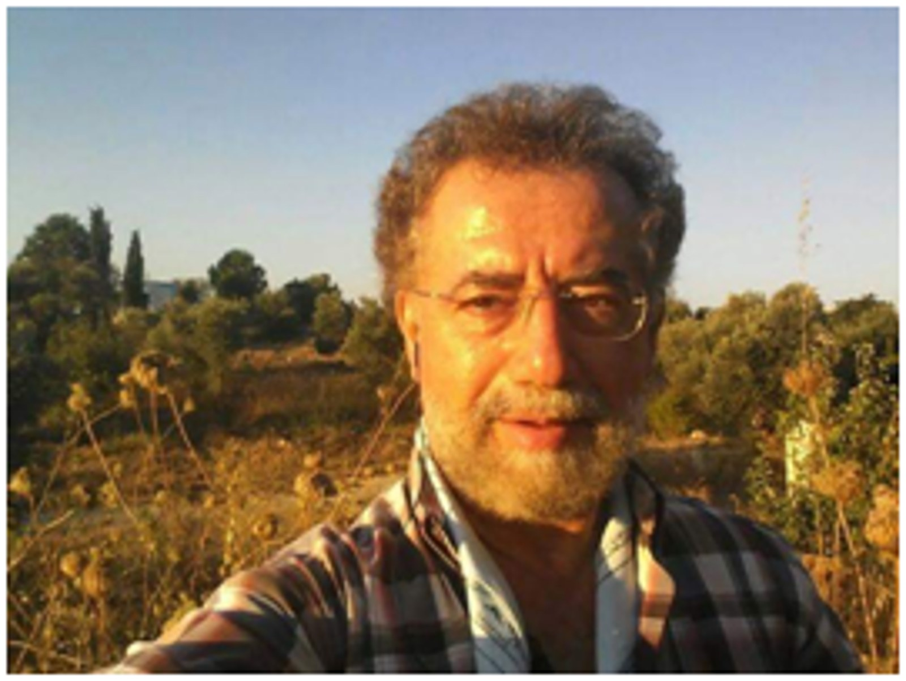
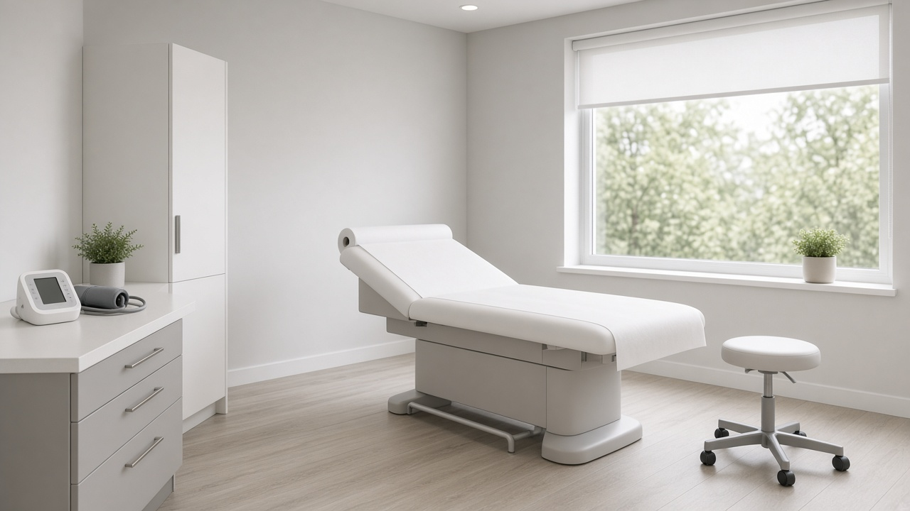

Deze arts is opgeleid in Duitsland aan de Universiteit van Keulen, waar hij ook zijn promotie behaalde. Hij is gespecialiseerd in huisartsgeneeskunde en sportgeneeskunde, volgens de officiële Duitse medische richtlijnen. In zijn praktijk behandelt hij het volledige gebied van de eerstelijnszorg, van kinderen tot volwassenen, waaronder ook orthopedische klachten.
Dr. Konstantinos Lamprianidis
Tigaki


Hij heeft jarenlang gewerkt in Duitse ziekenhuizen en spreekt vloeiend Duits en Engels, waardoor communicatie voor buitenlandse bezoekers geen probleem is. Voor toeristen op Kos biedt hij medische hulp bij niet-acute klachten en overige gezondheidsproblemen tijdens het verblijf.
Adres
Epar.Od. Tigkakiou, Tigkaki 853 00
Openingstijden
Elke dag 24 uur bereikbaar